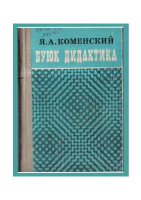

BDJahon pedagogika fanining asosiy nazariy va metodik qo'llanmasi.
Ushbu asar mashhur chex pedagogi Yan Amos Komenskiy tomonidan yozilgan bo'lib, jahon pedagogika fanining asosiy manbalaridan biri hisoblanadi. Kitobda ta'lim-tarbiya jarayonini tashkil etish, o'qitish metodikasi va bolalarni har tomonlama rivojlantirishning nazariy asoslari bayon etilgan.